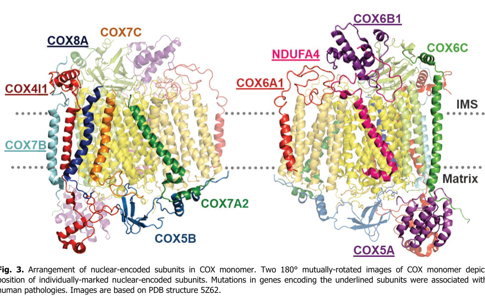

COX6B1 is an 86-residue nuclear-encoded, noncatalytic structural subunit of mitochondrial cytochrome c oxidase, complex IV. It associates with the intermembrane-space face of the inner-membrane complex and supports assembly and respiratory electron transfer. Its early assembly role depends on the mitochondrial redox environment, while its presence in the mature complex supports efficient oxidase activity. The precise connection to MT-CO2 maturation remains unresolved. Pathogenic substitutions of Arg20 cause mitochondrial complex IV deficiency.
| GO Term | Evidence | Action | Reason |
|---|---|---|---|
|
GO:0045277
respiratory chain complex IV
|
IBA
GO_REF:0000033 |
ACCEPT |
Summary: Conserved complex IV membership is supported by phylogeny and human structure.
Reason: The exact human sequence occupies PTHR11387 node PTN002478571 beneath the recorded PTN000147454 ancestor. Current mouse and bovine same-term records include experimental evidence; the human target also has direct structural evidence. Target self-evidence legitimately grounds ancestral inference. Current tree/MSA inspection supports placement but does not replay the historical PAINT curation session.
Propagation Review
Root cause:
NO FAILURE CORE
Sources checked:
MGI:MGI:107460
SUPPORTS TRANSFER
Official alias mapping: P56391. Current exact same-term records include UniProtKB:P56391!327594715 IDA PMID:34616041, UniProtKB:P56391!327594716 IDA PMID:38575788.
PANTHER:PTN000147454
SUPPORTS TRANSFER
Current PTHR11387 topology places the exact human target beneath this ancestor; current tree/MSA do not reconstruct the historical IBD session.
UniProtKB:P00429
SUPPORTS TRANSFER
Official alias mapping: P00429. Current exact same-term records include UniProtKB:P00429!357405347 IDA PMID:8638158.
UniProtKB:P14854
SUPPORTS TRANSFER
Official alias mapping: P14854. Current exact same-term records include UniProtKB:P14854!28807125 IPI PMID:30030519. This is legitimate target descendant evidence, not circular support.
|
|
GO:0005739
mitochondrion
|
IBA
GO_REF:0000033 |
ACCEPT |
Summary: Mitochondrial localization is conserved and independently observed in human cells.
Reason: Current PTHR11387 topology places the human target below PTN000147427. Official FlyBase mapping resolves to two UniProt products; Q9VWD1 carries mitochondrial IDA, while Q8IQW2 has inferred records. Mouse, bovine and human records corroborate localization. COX6B2 supports shared organelle localization without implying interchangeable rescue activity.
Propagation Review
Root cause:
NO FAILURE CORE
Sources checked:
FB:FBgn0031066
SUPPORTS TRANSFER
Official alias mapping: Q8IQW2, Q9VWD1. Current exact same-term records include UniProtKB:Q9VWD1!59240920 IDA PMID:20833144.
MGI:MGI:107460
SUPPORTS TRANSFER
Official alias mapping: P56391. Current exact same-term records include UniProtKB:P56391!327594701 HDA PMID:14651853, UniProtKB:P56391!327594702 HDA PMID:14651853, UniProtKB:P56391!327594703 HDA PMID:14651853, UniProtKB:P56391!327594704 HDA PMID:14651853, UniProtKB:P56391!327594705 HDA PMID:18614015.
PANTHER:PTN000147427
SUPPORTS TRANSFER
Current PTHR11387 topology places the exact human target beneath this ancestor; current tree/MSA do not reconstruct the historical IBD session.
UniProtKB:P00429
SOURCE WEAK OR INFERRED
Official aliases and complete current same-term records were inspected; available records are inferred or statement-level.
UniProtKB:P14854
SUPPORTS TRANSFER
Official alias mapping: P14854. Current exact same-term records include UniProtKB:P14854!28807115 IDA GO_REF:0000052, UniProtKB:P14854!28807116 HTP PMID:34800366. This is legitimate target descendant evidence, not circular support.
UniProtKB:Q6YFQ2
SUPPORTS TRANSFER
Official alias mapping: Q6YFQ2. Current exact same-term records include UniProtKB:Q6YFQ2!29155389 HTP PMID:34800366.
|
|
GO:0005743
mitochondrial inner membrane
|
IBA
GO_REF:0000033 |
ACCEPT |
Summary: The inner-membrane complex is the conserved location of COX6B1.
Reason: The target lies beneath PTN000147454 in the current tree. Mouse and bovine records carry experimental inner-membrane support, and human structure places COX6B1 on the intermembrane-space face of complex IV. Peripheral association with an integral membrane complex is compatible with this location; it does not require a COX6B1 transmembrane helix.
Propagation Review
Root cause:
NO FAILURE CORE
Sources checked:
MGI:MGI:107460
SUPPORTS TRANSFER
Official alias mapping: P56391. Current exact same-term records include UniProtKB:P56391!327594697 IDA PMID:34616041, UniProtKB:P56391!327594698 IDA PMID:38575788, UniProtKB:P56391!327594708 HDA PMID:12865426.
PANTHER:PTN000147454
SUPPORTS TRANSFER
Current PTHR11387 topology places the exact human target beneath this ancestor; current tree/MSA do not reconstruct the historical IBD session.
UniProtKB:P00429
SUPPORTS TRANSFER
Official alias mapping: P00429. Current exact same-term records include UniProtKB:P00429!357405343 EXP PMID:27605664, UniProtKB:P00429!357405344 EXP PMID:31533957.
UniProtKB:P14854
SUPPORTS TRANSFER
Official alias mapping: P14854. Current exact same-term records include UniProtKB:P14854!28807118 EXP PMID:30030519. This is legitimate target descendant evidence, not circular support.
|
|
GO:0005739
mitochondrion
|
IEA
GO_REF:0000002 |
ACCEPT |
Summary: The InterPro family mappings support mitochondrial localization.
Reason: Current IPR003213 and IPR036549 explicitly map to mitochondrion. Target family membership and independent human proteomics and immunofluorescence support the mapping. Other general family descriptions are not transferred into untested target activities.
Propagation Review
Root cause:
NO FAILURE CORE
Sources checked:
InterPro:IPR003213
SUPPORTS TRANSFER
Current InterPro entry explicitly carries this GO mapping; exact target membership is present in reviewed UniProt.
InterPro:IPR036549
SUPPORTS TRANSFER
Current InterPro entry explicitly carries this GO mapping; exact target membership is present in reviewed UniProt.
|
|
GO:0005743
mitochondrial inner membrane
|
IEA
GO_REF:0000120 |
ACCEPT |
Summary: The combined mapping agrees with the experimentally established membrane association.
Reason: The complete current source identifies mouse P56391, its authenticated Ensembl protein ENSMUSP00000075150, and the SL-0168 inner-membrane vocabulary mapping. Current mouse same-term experimental records and human structure support the location. SL-0168 is a controlled location entry, not an experimental donor protein.
Propagation Review
Root cause:
NO FAILURE CORE
Sources checked:
UniProtKB:P56391
SUPPORTS TRANSFER
Official alias mapping: P56391. Current exact same-term records include UniProtKB:P56391!327594697 IDA PMID:34616041, UniProtKB:P56391!327594698 IDA PMID:38575788, UniProtKB:P56391!327594708 HDA PMID:12865426.
ensembl:ENSMUSP00000075150
SUPPORTS TRANSFER
Official alias mapping: P56391. Current exact same-term records include UniProtKB:P56391!327594697 IDA PMID:34616041, UniProtKB:P56391!327594698 IDA PMID:38575788, UniProtKB:P56391!327594708 HDA PMID:12865426.
UniProtKB-SubCell:SL-0168
SUPPORTS TRANSFER
SL-0168 is the official mitochondrial-inner-membrane vocabulary mapping, not an experimental donor.
|
|
GO:0045277
respiratory chain complex IV
|
IEA
GO_REF:0000120 |
ACCEPT |
Summary: Complex IV membership is secure despite an unresolved current ARBA branch.
Reason: Current IPR003213 maps explicitly to complex IV, and authenticated mouse/Ensembl sources have same-term support. All eight current ARBA00035746 condition sets were evaluated: the target FunFam matches a branch restricted to Ascomycota, and no complete current branch matches human COX6B1. This current rule discrepancy does not overturn direct human complex membership or establish what an earlier rule version executed.
Propagation Review
Root cause:
NO FAILURE CORE
Sources checked:
ARBA:ARBA00035746
UNRESOLVED
All eight current condition sets were evaluated; no complete branch matches human COX6B1. The matching FunFam branch requires Ascomycota. This is a current-rule discrepancy, not proof about an earlier execution.
UniProtKB:P56391
SUPPORTS TRANSFER
Official alias mapping: P56391. Current exact same-term records include UniProtKB:P56391!327594715 IDA PMID:34616041, UniProtKB:P56391!327594716 IDA PMID:38575788.
ensembl:ENSMUSP00000075150
SUPPORTS TRANSFER
Official alias mapping: P56391. Current exact same-term records include UniProtKB:P56391!327594715 IDA PMID:34616041, UniProtKB:P56391!327594716 IDA PMID:38575788.
InterPro:IPR003213
SUPPORTS TRANSFER
Current InterPro entry explicitly carries this GO mapping; exact target membership is present in reviewed UniProt.
|
|
GO:1902600
proton transmembrane transport
|
IEA
GO_REF:0000108 |
KEEP AS NON CORE |
Summary: Retain proton transport as the coupled physiological context of the assembled oxidase.
Reason: The complete current GO_REF:0000108 record identifies GO:0004129 as its logical premise. COX6B1 supplies structural support to the active oxidase, whose electron-transfer reaction is coupled to proton movement. This makes participation defensible at the complex level, but the inspected human structural and knockout/rescue evidence does not resolve a COX6B1-specific contribution to proton translocation separately from assembly and oxidase activity. Selective removal of bovine VIb left proton pumping unchanged in PMID:1332762 despite increased oxidase activity. That preparation-specific result supports separating the pumping claim from the directly established structural/oxidase role; it does not establish absence of a role in every human context. Retain the coupled process as non-core and center the core on contribution to cytochrome-c oxidase activity and its specific electron-transfer step.
Propagation Review
Root cause:
NO FAILURE NON CORE
Sources checked:
GO:0004129
SUPPORTS TRANSFER
The assembled oxidase activity provides a valid logical premise for this coupled process. COX6B1 contributes structural work, but a distinct subunit-specific pumping role is unresolved; the transferred process is retained as non-core.
|
|
GO:0006119
oxidative phosphorylation
|
IEA
GO_REF:0000041 |
KEEP AS NON CORE |
Summary: Oxidative phosphorylation is a valid broader pathway context.
Reason: The complete current source identifies UniPathway UPA00705. COX6B1 contributes to the terminal respiratory complex that sustains the proton gradient; it does not itself synthesize ATP. The more precise core process is electron transfer from cytochrome c to oxygen.
Propagation Review
Root cause:
NO FAILURE NON CORE
Sources checked:
UniPathway:UPA00705
SUPPORTS TRANSFER
Current target UniProt cross-reference identifies oxidative phosphorylation; the direct vocabulary endpoint was unavailable. The pathway context agrees with complex IV biology.
|
|
GO:0006123
mitochondrial electron transport, cytochrome c to oxygen
|
NAS
PMID:30030519 Structure of the intact 14-subunit human cytochrome c oxidas... |
ACCEPT |
Summary: COX6B1 contributes structurally to cytochrome-c-to-oxygen electron transport.
Reason: The human HEK293F structure identifies COX6B1 in the assembled 14-subunit enzyme. The process is performed by the complex, with its mitochondrial redox subunits carrying the cofactors; structural participation does not require COX6B1 to be an autonomous oxidoreductase. Human knockout/rescue and the low activity of AOX-bypassed incomplete complexes independently corroborate its contribution.
|
|
GO:0031966
mitochondrial membrane
|
IDA
PMID:30030519 Structure of the intact 14-subunit human cytochrome c oxidas... |
MODIFY |
Summary: Specify the mitochondrial inner membrane from the resolved human complex.
Reason: PMID:30030519 purified human HEK293F respiratory supercomplexes and resolved COX6B1 on the intermembrane-space face of inner-membrane complex IV. Current GO:0005743 descends from the source mitochondrial-membrane term GO:0031966 and captures the demonstrated compartment more precisely. Peripheral association is retained without claiming a COX6B1 transmembrane helix. The separate GO:0005743 experimental annotation agrees with this refinement; each source-specific assertion retains its own identity.
Proposed replacements:
mitochondrial inner membrane
Supporting Evidence:
|
|
GO:0045277
respiratory chain complex IV
|
IPI
PMID:30030519 Structure of the intact 14-subunit human cytochrome c oxidas... |
ACCEPT |
Summary: COX6B1 is a resolved constituent of human complex IV.
Reason: The 3.3-angstrom human structure, PDB 5Z62, contains 14 distinct subunits and places COX6B1 at the intermembrane-space surface. The assayed structural complex is monomeric within a supercomplex. This is direct membership evidence and does not establish an obligatory human dimer bridge.
Supporting Evidence:
|
|
GO:0045333
cellular respiration
|
NAS
PMID:30030519 Structure of the intact 14-subunit human cytochrome c oxidas... |
KEEP AS NON CORE |
Summary: Cellular respiration is a supported broader biological context.
Reason: Complex IV participates in respiratory electron transport, and human COX6B1 rescue restores respiratory capacity in the knockout model. Cellular respiration encompasses additional reactions beyond this subunit; the core therefore uses the specific cytochrome-c-to-oxygen process.
|
|
GO:0005739
mitochondrion
|
IDA
GO_REF:0000052 |
ACCEPT |
Summary: Curated human immunofluorescence supports mitochondrial localization.
Reason: The current HPA ICC/IF record reports supported mitochondrial localization in A-431, U-251 MG and U2OS cells. Returned experimental summaries were inspected; image pixels were not independently scored. The additional sperm principal-piece entry does not alter the mitochondrial conclusion or establish a separate core here.
Supporting Evidence:
GO_REF:0000052
|
|
GO:0005743
mitochondrial inner membrane
|
EXP
PMID:30030519 Structure of the intact 14-subunit human cytochrome c oxidas... |
ACCEPT |
Summary: COX6B1 associates with the inner-membrane complex on its intermembrane side.
Reason: The human structural study places COX6B1 beside the membrane-embedded oxidase subunits and the cardiolipin/NDUFA4 region. Its position is consistent with a peripheral subunit of the inner-membrane enzyme, rather than a separate soluble matrix enzyme or a membrane-spanning transporter.
Supporting Evidence:
|
|
GO:0005739
mitochondrion
|
HTP
PMID:34800366 Quantitative high-confidence human mitochondrial proteome an... |
ACCEPT |
Summary: The original MitoCoP table directly includes the COX6B1 protein group.
Reason: Authenticated Table S1 sheets A row 251 and B row 226 identify P14854/COX6B1, with MitoCoP inclusion, subtractive Class 1, spatial Cluster 1 and importomics Class 1. The subtractive mean log2 enrichment is 1.0578 and TOMM40-depletion log2 change is -2.3375. These human proteomic observations support mitochondrion. The grouped accessions and an Ambiguous membrane-association category do not establish a unique proteoform or integral topology.
Supporting Evidence:
|
|
GO:0021762
substantia nigra development
|
HEP
PMID:22926577 Quantitative proteomic analysis of human substantia nigra in... |
MARK AS OVER ANNOTATED |
Summary: Adult substantia-nigra proteomics does not establish substantia nigra development.
Reason: The original study compared adult postmortem tissue from five individuals per group, aged 47–94, with disease and control groups. Table 2 detects P14854 and reports an HD/control ratio of 0.58 ± 0.05 with a PLGS downregulation metric of 0.01. GO:0021762 describes formation and maturation of the substantia nigra; the paper contains no developmental formation or maturation experiment. Preserve the true detection and disease association while rejecting that source-specific developmental inference, without asserting that COX6B1 cannot affect development.
Supporting Evidence:
|
|
GO:0005743
mitochondrial inner membrane
|
TAS
Reactome:R-HSA-163214 |
ACCEPT |
Summary: The electron-transfer catalyst contains the membrane-associated COX6B1 subunit.
Reason: The actual Reactome path follows event 163214 through catalyst 164322, complex 164316, COX6B1/2 set 5336172 and human entity 164299/reference 52600. This establishes the curated target location and complex context; the catalytic chemistry is attributed to the assembled enzyme.
Supporting Evidence:
Reactome:R-HSA-163214
|
|
GO:0005743
mitochondrial inner membrane
|
TAS
Reactome:R-HSA-9709406 |
ACCEPT |
Summary: The carbon-monoxide-binding event retains COX6B1 within its complex-IV target.
Reason: Both the input complex and the CO-bound output reach the exact human COX6B1 entity through the subunit set. The inherited annotation concerns inner-membrane location. It does not imply that isolated COX6B1 binds carbon monoxide; the event describes inhibition at the oxidase heme center.
Supporting Evidence:
Reactome:R-HSA-9709406
|
|
GO:0005743
mitochondrial inner membrane
|
TAS
Reactome:R-HSA-9865663 |
ACCEPT |
Summary: The assembly event explicitly includes the COX6B1-containing subunit set.
Reason: Current event 9865663 reaches human COX6B1 through its input set and assembled output, supporting inner-membrane location during assembly. Its late-incorporation model is a curated pathway context. The published human knockout/AOX study additionally identifies an earlier redox-sensitive requirement, without demonstrating a COX6B1 copper-transfer reaction.
|
|
GO:0004129
cytochrome-c oxidase activity
|
NAS
PMID:2172092 Isolation of cDNAs encoding subunit VIb of cytochrome c oxid... |
ACCEPT |
Summary: Retain oxidase activity at the complex-subunit contribution scope.
Reason: The original NAS citation identifies the cloned human VIb subunit; its complete abstract was read, but its full paper remained unavailable after bounded recovery. Independent human structure and published knockout/rescue establish incorporation of COX6B1 into the active oxidase and restoration of respiratory capacity by complementation. This is a specific structural contribution to a defined multisubunit molecular function, rather than autonomous metal-centered catalysis. Retain that biological contribution; replacing it solely with generic structural molecule activity would discard the supported oxidase specificity. The core explicitly uses contributes_to_molecular_function, and neither the annotation nor the core is interpreted here as an assay of isolated COX6B1 catalysis.
|
Q: What molecular interaction links COX6B1 to early MT-CO2 maturation? Human redox-bypass experiments identify a dependency but do not distinguish copper transfer, redox chemistry and stabilization of an assembly intermediate.
Q: How do human Arg20His and Arg20Cys variants differ in folding, subunit stability, assembly and mature-complex contacts? Published human cell models distinguish their severity, but do not fully resolve the responsible molecular steps.
Q: How should the increased activity after selective bovine VIb removal be reconciled with deficient activity in human COX6B1-null cells? Species, detergent preparation, enzyme abundance and incomplete assembly must be separated before attributing the difference to oligomerization or cooperativity. The bovine authors proposed an active-center interaction; what direct contact or kinetic evidence could distinguish that hypothesis from changes in the enzyme preparation?
Experiment: Compare human wild-type, Arg20His and Arg20Cys complexes at matched expression and assembly abundance, combining native complex analysis, structural contacts, MT-CO2 copper occupancy and redox measurements. Include untagged rescue controls.
Hypothesis: The variants differentially alter folding and assembly contacts; a direct contribution to copper maturation remains a testable alternative.
Type: structural biology / mitochondrial biochemistry
Experiment: Measure oxidase turnover and proton pumping in preparations with verified subunit composition and oligomeric state, comparing selective VIb removal with cellular knockout-derived incomplete complexes. Control detergent, lipid and active enzyme concentrations.
Hypothesis: Preparation composition and active-complex abundance account for part of the differing bovine removal and human knockout phenotypes; obligatory dimer-dependent cooperativity is not assumed.
Type: enzyme kinetics / respirometry
Experiment: Compare patient-derived cardiomyocytes and neurons with isogenic corrected cells for complex IV abundance, respiratory capacity and assembly-intermediate composition; then measure copper occupancy where sufficient material is available.
Hypothesis: Tissue context changes the bioenergetic consequences of the established COX6B1 assembly/function defect; specific MT-CO2 hypometalation requires direct measurement.
Type: stem-cell biology / clinical model
The research report should be a detailed narrative explaining the function, biological processes, and localization of the gene product. Citations should be given for all claims.
You should prioritize authoritative reviews and primary scientific literature when conducting research. You can supplement
this with annotations you find in gene/protein databases, but these can be outdated or inaccurate.
We are specifically interested in the primary function of the gene - for enzymes, what reaction is catalyzed, and what is the substrate specificity? For transporters, what is the substrate? For structural proteins or adapters, what is the broader structural role? For signaling molecules, what is the role in the pathway.
We are interested in where in or outside the cell the gene product carries out its function.
We are also interested in the signaling or biochemical pathways in which the gene functions. We are less interested in broad pleiotropic effects, except where these elucidate the precise role.
Include evidence where possible. We are interested in both experimental evidence as well as inference from structure, evolution, or bioinformatic analysis. Precise studies should be prioritized over high-throughput, where available.
The literature assembled here consistently matches the UniProt target P14854: COX6B1, the nuclear-encoded cytochrome c oxidase subunit VIb isoform 1 (COX VIb-1) in Homo sapiens, an accessory subunit of mitochondrial complex IV (cytochrome c oxidase, COX). Reviews distinguish it from the paralog COX6B2 (testis-enriched; sometimes expressed in cancers), confirming the correct gene/protein identity and organism context. (gladyck2021regulationofcox pages 12-13, cunatova2020roleofcytochrome pages 7-8, sinkler2017tissueandconditionspecific pages 8-9)
Cytochrome c oxidase (complex IV; COX/CCO) is the terminal enzyme of the mitochondrial electron transport chain. Its catalytic core transfers electrons from cytochrome c to molecular oxygen and contributes to the proton gradient used for ATP synthesis. COX6B1 is not catalytic; it is a small, nuclear-encoded accessory subunit that modulates structure/assembly and function of the complex. (sinkler2017tissueandconditionspecific pages 1-2, gladyck2021regulationofcox pages 12-13)
COX6B1 is positioned on the intermembrane-space (IMS)-facing side of complex IV. Structural placement from reviews and figure evidence shows COX6B1 exposed on the IMS side and situated at/near the dimer interface. (cunatova2020roleofcytochrome pages 7-8, gladyck2021regulationofcox pages 12-13, cunatova2020roleofcytochrome media a8606d54)
A consistent model is that COX6B1 bridges the two monomers in the COX dimer and supports dimer stability and cooperative function. Experimental removal/loss of COX6B1 (e.g., during mild solubilization) leads to monomerization of COX and is associated with a ~two-fold increase in enzyme activity without changing proton stoichiometry, interpreted as loss of inter-monomer cooperativity and altered cytochrome c binding kinetics. (cunatova2020roleofcytochrome pages 7-8, sinkler2017tissueandconditionspecific pages 8-9)
COX VIb exists as (at least) a broadly expressed somatic isoform (COX6B1) and a testis-enriched isoform (COX6B2). This matters for interpretation of studies in reproductive tissues and cancers where COX6B2 may be induced. (cunatova2020roleofcytochrome pages 7-8, sinkler2017tissueandconditionspecific pages 8-9)
A 2024 study built an oxidative phosphorylation (OXPHOS)-gene prognostic risk score model for uveal melanoma using 80 TCGA-UVM samples and external validation sets. COX6B1 was one of 9 OXPHOS-related genes in the final model. Reported performance included AUC > 0.88 for predicting 1–5 year survival, and an external-dataset median risk-score cutoff of 16.213 for stratifying high- vs low-risk groups. This is a real-world example of COX6B1 being operationalized as a feature in transcriptomic prognostic modeling (though not validated as a standalone biomarker in this paper). (zhan2024constructionofoxidative pages 1-2, zhan2024constructionofoxidative pages 2-4)
A 2024 CRISPR study knocked out Cox6b2 (testis-enriched paralog) in mice. The abstract reports male subfertility with low sperm motility, while sperm mitochondrial respiration appeared normal by oxygen consumption rate. This reinforces that VIb biology is isoform-dependent and that COX6B1 (somatic) may compensate in testis contexts. The paper reports CRISPR production statistics (e.g., electroporated eggs and mutant pups), highlighting feasibility of isoform-specific functional dissection in vivo. (shimada2024disruptionoftestisenriched pages 1-2)
A 2023 review on dietary energy restriction discussed respiratory-chain supercomplex (SC) formation and notes Cox6b1 as involved in respiratory function and potentially complex IV regulation, in the context of dietary restriction–associated SC formation in mouse liver mitochondria. This source is conceptually relevant but does not provide COX6B1-specific quantitative measurements. (shimokawa2023mechanismsunderlyingretardation pages 5-8)
Within the retrieved corpus, most COX6B1-specific mechanistic and disease-variant work is concentrated in authoritative reviews (2017–2021) plus a newer mechanistic preprint (2025) rather than 2023–2024 primary mechanistic papers. This does not imply the field is inactive; it reflects the accessible set in this tool-assisted retrieval. (cunatova2025cox6b1securesa pages 6-8, cunatova2020roleofcytochrome pages 7-8, sinkler2017tissueandconditionspecific pages 8-9)
COX6B1 functions within the oxidative phosphorylation pathway as a complex IV accessory subunit that contributes to quaternary structure (dimerization) and is linked to assembly/biogenesis of the complex. Complex IV is embedded in the inner mitochondrial membrane, with domains projecting into IMS and matrix; COX6B1 is among the small nuclear-encoded subunits imported into mitochondria. (weraarpachai2012identificationandcharacterization pages 41-45, cunatova2020roleofcytochrome pages 7-8)
Earlier patient-cell–based interpretations suggested COX6B1 is added late in assembly (consistent with mutant COX6B1 showing reduced incorporation and accumulation of an assembly intermediate designated S3). (cunatova2020roleofcytochrome pages 10-11)
More recent mechanistic work (preprint) using COX6B1 knockout/complementation in human cells argues COX6B1 is also essential for an early, redox-sensitive step in biogenesis—particularly affecting MT-CO2 maturation/metalation, with altered abundance/association of copper-delivery/assembly factors (e.g., COA6/SCO1/SCO2). The authors report that an AOX-based redox rescue permits partial accumulation of assembly intermediates, but the rescued CIV subassembly has ~5% of wild-type CIV activity. (cunatova2025cox6b1securesa pages 6-8)
These two views can be reconciled as COX6B1 being: (i) structurally important at the mature/dimer stage and (ii) functionally required to stabilize or enable specific early assembly transitions that become especially evident under knockout perturbations. (cunatova2020roleofcytochrome pages 10-11, cunatova2025cox6b1securesa pages 6-8)
Structural/functional reviews place COX6B1 atop the dimer on the IMS side, bridging monomers and contacting core subunits (notably II/III) in ways that can affect cytochrome c docking kinetics and/or local assembly of COX2-related modules. (gladyck2021regulationofcox pages 12-13, cunatova2020roleofcytochrome pages 7-8)
Pathogenic homozygous missense variants in a conserved arginine in the N-terminus region are repeatedly highlighted. Depending on numbering conventions these appear as R19H/R19C or R20H/R20C. Reported phenotypes include infantile/early-onset encephalomyopathy with isolated complex IV deficiency; more severe presentations include hydrocephalus and hypertrophic cardiomyopathy (notably with Arg→Cys). (sinkler2017tissueandconditionspecific pages 8-9, cunatova2020roleofcytochrome pages 10-11, sinkler2017tissueandconditionspecific pages 3-5)
A 2020 review summarizes evidence that patient fibroblasts and muscle with Arg20His show reduced COX6B1 steady-state levels and decreased incorporation into assembling complex IV, with accumulation of assembly intermediate S3 and selective reduction in complex IV activity (other OXPHOS complexes relatively unaffected). Importantly, wild-type COX6B1 complementation restores complex IV content and activity, supporting causality. (cunatova2020roleofcytochrome pages 10-11)
COX6B1 is clinically relevant as a bona fide nuclear gene for isolated complex IV deficiency. Practical implementation is typically through genomic testing (e.g., exome/genome sequencing panels for mitochondrial disease) followed by functional validation (complex IV activity assays, BN-PAGE assembly profiling, and complementation in patient cells as summarized). (cunatova2020roleofcytochrome pages 10-11, sinkler2017tissueandconditionspecific pages 3-5)
COX6B1 is frequently used as an OXPHOS/mitochondrial respiration gene in transcriptomic signatures. In uveal melanoma, it contributed to a multigene OXPHOS risk model with strong ROC performance (AUC > 0.88 for 1–5 year survival prediction). These applications are real-world in the sense of computational prognostics, but remain translational until prospectively validated and clinically deployed. (zhan2024constructionofoxidative pages 1-2)
Functional studies referenced in the assembled evidence include: (i) patient-cell rescue by wild-type COX6B1, (ii) KO/complementation approaches in human cell lines for assembly dissection, and (iii) paralog-specific KO mice (Cox6b2) for isoform physiology. (cunatova2020roleofcytochrome pages 10-11, cunatova2025cox6b1securesa pages 6-8, shimada2024disruptionoftestisenriched pages 1-2)
Two key schematics from a 2020 review provide visual support:
- A figure showing COX6B1 labeled on the IMS side of complex IV among nuclear-encoded subunits (supports localization/topology). (cunatova2020roleofcytochrome media a8606d54)
- A figure summarizing alternative assembly models where COX6B appears either as a late-added component (sequential model) or preassembled within a module (modular model), relevant to reconciling late-incorporation views with newer early-checkpoint findings. (cunatova2020roleofcytochrome media 5dad9122)
The following table consolidates core annotation claims and their supporting evidence.
| Annotation area | Key claim | Supporting evidence (brief) | Citation IDs |
|---|---|---|---|
| Identity / isoforms | COX6B1 (UniProt P14854) is the human, nuclear-encoded somatic/ubiquitous cytochrome c oxidase subunit VIb1; it is distinct from the testis-enriched paralog COX6B2. | Reviews identify COX6B1 as COX VIb1/Cox12p, broadly expressed across tissues, while COX6B2 is testes-specific; COX6B1 is the relevant human somatic isoform for complex IV. | (gladyck2021regulationofcox pages 12-13, cunatova2020roleofcytochrome pages 7-8, sinkler2017tissueandconditionspecific pages 8-9) |
| Subcellular localization / topology | COX6B1 is an intermembrane-space-facing subunit of mitochondrial complex IV, positioned on the outer/IMS side of the holoenzyme. | Structural and review sources place VIb1 on the IMS side of cytochrome c oxidase, where it is exposed at the dimer interface; figure evidence also shows COX6B1 on the IMS side. | (gladyck2021regulationofcox pages 12-13, cunatova2020roleofcytochrome pages 7-8, cunatova2020roleofcytochrome media a8606d54) |
| Primary molecular function within complex IV | COX6B1 is an accessory structural/regulatory subunit of complex IV rather than a catalytic center; it supports cytochrome c oxidase function and is positioned near the cytochrome c interaction region. | COX catalyzes electron transfer from cytochrome c to O2 in the core subunits, while COX6B1 is a small nuclear-encoded subunit modeled near the cytochrome c binding site and required for proper complex IV activity. | (gladyck2021regulationofcox pages 12-13, sinkler2017tissueandconditionspecific pages 1-2) |
| Role in dimerization / cooperativity | COX6B1 helps bridge the two complex IV monomers, stabilizing the dimer and modulating inter-monomer cooperativity; removal/absence can monomerize COX and increase activity about twofold. | Reviews report that VIb connects monomers on the IMS side; mild solubilization causing COX6B1 loss leads to monomerization and ~2-fold higher activity without changing proton stoichiometry, consistent with altered cytochrome c binding cooperativity. | (cunatova2020roleofcytochrome pages 7-8, sinkler2017tissueandconditionspecific pages 8-9) |
| Role in assembly (early vs late) | Earlier models placed COX6B1 as a late-added subunit, but recent mechanistic work indicates it is also essential for an early redox-sensitive assembly step involving MT-CO2 maturation/metalation. | Patient-cell and review data linked mutant COX6B1 to reduced incorporation and accumulation of late intermediate S3; newer KO/complementation data show total loss of complex IV, block at MT-CO2 maturation, altered COA6/SCO factors, and support an indispensable early assembly role. | (cunatova2020roleofcytochrome pages 10-11, cunatova2025cox6b1securesa pages 6-8, cunatova2025cox6b1securesa pages 1-3, cunatova2020roleofcytochrome media 5dad9122) |
| Disease-causing variants / phenotypes | Pathogenic homozygous missense variants in conserved Arg20/Arg19 region (reported as R20H/R20C or R19H/R19C depending on numbering) cause isolated complex IV deficiency with severe infantile mitochondrial disease. | Reported phenotypes include infantile encephalomyopathy; hydrocephalus and hypertrophic cardiomyopathy with the more severe Arg20Cys variant; mutant cells show reduced COX6B1 steady-state levels, poor incorporation into holoenzyme, and reduced complex IV activity, rescued by WT COX6B1 expression. | (sinkler2017tissueandconditionspecific pages 8-9, cunatova2020roleofcytochrome pages 10-11, sinkler2017tissueandconditionspecific pages 3-5) |
| Recent applications (biomarker / prognostic) | Recent studies use COX6B1 in translational contexts mainly as a biomarker/prognostic-gene component rather than a validated standalone clinical marker. | In 2024 uveal melanoma, COX6B1 was one of 9 OXPHOS-related genes in a prognostic model built from 80 TCGA-UVM cases, with 1–5 year AUC values all >0.88 and external validation in GSE22138/GSE39717; a 2023 dietary-restriction review also discusses Cox6b1 conceptually in complex IV/supercomplex regulation, but without COX6B1-specific quantitative biomarker metrics. | (zhan2024constructionofoxidative pages 1-2, zhan2024constructionofoxidative pages 2-4, shimokawa2023mechanismsunderlyingretardation pages 5-8) |
Table: This table summarizes the main functional annotation points for human COX6B1, including identity, localization, molecular role, assembly biology, disease relevance, and recent translational uses. It is useful as a compact evidence map tied directly to the available context sources.
Note: A mechanistic COX6B1 assembly preprint (bioRxiv, Jun 2025) provides detailed knockout/variant/rescue quantitation but is outside the requested 2023–2024 priority window; it is included only to contextualize the most explicit recent mechanistic model in the retrieved evidence. https://doi.org/10.1101/2025.03.25.645161 (cunatova2025cox6b1securesa pages 6-8)
References
(gladyck2021regulationofcox pages 12-13): Stephanie Gladyck, Siddhesh Aras, Maik Hüttemann, and Lawrence I. Grossman. Regulation of cox assembly and function by twin cx9c proteins—implications for human disease. Cells, 10:197, Jan 2021. URL: https://doi.org/10.3390/cells10020197, doi:10.3390/cells10020197. This article has 31 citations.
(cunatova2020roleofcytochrome pages 7-8): K Čunátová, D Pajuelo Reguera, J Houštěk, T Mráček, and P Pecina. Role of cytochrome c oxidase nuclear-encoded subunits in health and disease. Physiological Research, pages 947-965, Nov 2020. URL: https://doi.org/10.33549/physiolres.934446, doi:10.33549/physiolres.934446. This article has 52 citations and is from a peer-reviewed journal.
(sinkler2017tissueandconditionspecific pages 8-9): Christopher A. Sinkler, Hasini Kalpage, Joseph Shay, Icksoo Lee, Moh H. Malek, Lawrence I. Grossman, and Maik Hüttemann. Tissue- and condition-specific isoforms of mammalian cytochrome c oxidase subunits: from function to human disease. Oxidative Medicine and Cellular Longevity, May 2017. URL: https://doi.org/10.1155/2017/1534056, doi:10.1155/2017/1534056. This article has 153 citations.
(sinkler2017tissueandconditionspecific pages 1-2): Christopher A. Sinkler, Hasini Kalpage, Joseph Shay, Icksoo Lee, Moh H. Malek, Lawrence I. Grossman, and Maik Hüttemann. Tissue- and condition-specific isoforms of mammalian cytochrome c oxidase subunits: from function to human disease. Oxidative Medicine and Cellular Longevity, May 2017. URL: https://doi.org/10.1155/2017/1534056, doi:10.1155/2017/1534056. This article has 153 citations.
(cunatova2020roleofcytochrome media a8606d54): K Čunátová, D Pajuelo Reguera, J Houštěk, T Mráček, and P Pecina. Role of cytochrome c oxidase nuclear-encoded subunits in health and disease. Physiological Research, pages 947-965, Nov 2020. URL: https://doi.org/10.33549/physiolres.934446, doi:10.33549/physiolres.934446. This article has 52 citations and is from a peer-reviewed journal.
(zhan2024constructionofoxidative pages 1-2): Zhiyun Zhan, Kun Lin, and Tingting Wang. Construction of oxidative phosphorylation-related prognostic risk score model in uveal melanoma. BMC Ophthalmology, May 2024. URL: https://doi.org/10.1186/s12886-024-03441-6, doi:10.1186/s12886-024-03441-6. This article has 7 citations and is from a peer-reviewed journal.
(zhan2024constructionofoxidative pages 2-4): Zhiyun Zhan, Kun Lin, and Tingting Wang. Construction of oxidative phosphorylation-related prognostic risk score model in uveal melanoma. BMC Ophthalmology, May 2024. URL: https://doi.org/10.1186/s12886-024-03441-6, doi:10.1186/s12886-024-03441-6. This article has 7 citations and is from a peer-reviewed journal.
(shimada2024disruptionoftestisenriched pages 1-2): Keisuke Shimada, Yonggang Lu, and Masahito Ikawa. Disruption of testis-enriched cytochrome c oxidase subunit cox6b2 but not cox8c leads to subfertility. Experimental Animals, 73:1-10, Jan 2024. URL: https://doi.org/10.1538/expanim.23-0055, doi:10.1538/expanim.23-0055. This article has 10 citations and is from a peer-reviewed journal.
(shimokawa2023mechanismsunderlyingretardation pages 5-8): Isao Shimokawa. Mechanisms underlying retardation of aging by dietary energy restriction. Pathology International, 73:579-592, Nov 2023. URL: https://doi.org/10.1111/pin.13387, doi:10.1111/pin.13387. This article has 4 citations and is from a peer-reviewed journal.
(cunatova2025cox6b1securesa pages 6-8): Kristýna Čunátová, Marek Vrbacký, Michal Knězů, Alena Pecinová, Lukáš Alán, Josef Houštěk, Erika Fernández-Vizarra, Tomáš Mráček, and Petr Pecina. Cox6b1 secures a redox-sensitive step in early cytochrome c oxidase assembly. bioRxiv, Jun 2025. URL: https://doi.org/10.1101/2025.03.25.645161, doi:10.1101/2025.03.25.645161. This article has 0 citations.
(weraarpachai2012identificationandcharacterization pages 41-45): W Weraarpachai. Identification and characterization of novel genes involved in cytochrome c oxidase deficiencies. Unknown journal, 2012.
(cunatova2020roleofcytochrome pages 10-11): K Čunátová, D Pajuelo Reguera, J Houštěk, T Mráček, and P Pecina. Role of cytochrome c oxidase nuclear-encoded subunits in health and disease. Physiological Research, pages 947-965, Nov 2020. URL: https://doi.org/10.33549/physiolres.934446, doi:10.33549/physiolres.934446. This article has 52 citations and is from a peer-reviewed journal.
(sinkler2017tissueandconditionspecific pages 3-5): Christopher A. Sinkler, Hasini Kalpage, Joseph Shay, Icksoo Lee, Moh H. Malek, Lawrence I. Grossman, and Maik Hüttemann. Tissue- and condition-specific isoforms of mammalian cytochrome c oxidase subunits: from function to human disease. Oxidative Medicine and Cellular Longevity, May 2017. URL: https://doi.org/10.1155/2017/1534056, doi:10.1155/2017/1534056. This article has 153 citations.
(cunatova2020roleofcytochrome media 5dad9122): K Čunátová, D Pajuelo Reguera, J Houštěk, T Mráček, and P Pecina. Role of cytochrome c oxidase nuclear-encoded subunits in health and disease. Physiological Research, pages 947-965, Nov 2020. URL: https://doi.org/10.33549/physiolres.934446, doi:10.33549/physiolres.934446. This article has 52 citations and is from a peer-reviewed journal.
(cunatova2025cox6b1securesa pages 1-3): Kristýna Čunátová, Marek Vrbacký, Michal Knězů, Alena Pecinová, Lukáš Alán, Josef Houštěk, Erika Fernández-Vizarra, Tomáš Mráček, and Petr Pecina. Cox6b1 secures a redox-sensitive step in early cytochrome c oxidase assembly. bioRxiv, Jun 2025. URL: https://doi.org/10.1101/2025.03.25.645161, doi:10.1101/2025.03.25.645161. This article has 0 citations.

COX6B1 is a small peripheral subunit on the intermembrane-space face of complex IV. Its structural contribution to the active respiratory enzyme is the central function. The 86-residue human sequence is distinct from the separately encoded COX6B2 paralog; no alternative splice product is listed in the reviewed record. Arg20 numbering refers to the displayed sequence, including the initiator methionine.
The human HEK293F cryo-EM structure resolves COX6B1 within a 14-subunit monomer derived from a respiratory supercomplex. COX6B1 lies near the cardiolipin/NDUFA4 region on the intermembrane-space side. This is direct membership and structural evidence. The study compares that human monomer with older bovine dimer structures; its detergent/activity experiments use porcine enzyme. It questions obligatory dimerization but does not exclude a dimer in every biological setting. Consequently, the earlier universal dimer-bridge explanation is too strong. PMID:30030519(https://www.nature.com/articles/s41422-018-0071-1), Results, Figures 1–4 and 6, and Materials and Methods. The repository's partial text is supplemented by the original publisher article.
The published successor to the early-assembly preprint tests three human HEK293 knockout clones, full-length COX6B1 with a C-terminal FLAG tag, Arg20 variants and an alternative oxidase from Aspergillus. COX6B1 rescue restores respiratory capacity. Alternative oxidase allows incomplete complex-IV assemblies to accumulate but leaves only about 5% of wild-type COX capacity under the artificial-substrate assay. These results distinguish an early redox-sensitive assembly requirement from later structural/function effects. Direct COX6B1 copper transfer, reductase chemistry and the precise MT-CO2 maturation mechanism remain unresolved. Tagged COX6B2 failed rescue in this cellular system, which does not establish universal noncomplementation in other tissues. PMID:41419202(https://pmc.ncbi.nlm.nih.gov/articles/PMC12870770/), Results, Discussion and Experimental procedures, especially the construct, native-complex and respirometry sections.
The complete bovine-heart VIb-removal abstract reports increased oxidase activity and increased cytochrome-c Km, with unchanged proton pumping. Higher Km is not increased affinity. The accessible abstract does not directly report monomerization, and attempts at reconstitution were unsuccessful. That biochemical preparation must not be treated as equivalent to a human cellular knockout. PMID:1332762(https://pubmed.ncbi.nlm.nih.gov/1332762/). The full original remains unavailable. Similarly, PMID:2172092(https://pubmed.ncbi.nlm.nih.gov/2172092/) establishes human VIb cloning and transcript observations at the accessible abstract level; it is not an isolated catalytic assay.
The oxidase and proton-transport annotations are retained at the structural complex-participation scope. A subunit need not contain an autonomous active site or pore to contribute the structure of the enzyme performing the reaction. The core uses contribution to cytochrome-c oxidase activity and the specific electron-transfer process. This does not assign an isolated COX6B1 redox reaction or proton channel. The broad oxidative-phosphorylation and cellular-respiration annotations remain secondary context. The structural mitochondrial-membrane annotation is refined to the demonstrated inner membrane, preserving its source identity. No separate assembly, copper-transfer, reductase or regulatory molecular function is added from the unresolved early mechanism.
The original MitoCoP supplementary Table S1 directly identifies COX6B1 in sheets A row 251 and B row 226. P14854 is the principal identifier within a protein group. Subtractive Class 1, spatial Cluster 1 and importomics Class 1 support mitochondrial localization. The subtractive mean log2 enrichment is 1.0578, and the TOMM40-depletion log2 change is -2.3375. The membrane-association classification is Ambiguous, so these data do not establish integral topology or an exclusive proteoform. The table's inherited UniProt dimer description is a database field, not a new measurement. PMID:34800366(https://pmc.ncbi.nlm.nih.gov/articles/PMC8664129/), Methods and Table S1.
Current HPA summaries report supported mitochondrial immunofluorescence in A-431, U-251 MG and U2OS cells; image pixels were not independently scored. Three Reactome events reach the human COX6B1 entity through the COX6B1/2 subunit set. Their electron-transfer, carbon-monoxide inhibition and assembly contexts support location within the membrane complex. They do not establish isolated COX6B1 carbon-monoxide binding or copper chemistry.
Current PTHR11387 places the exact human sequence beneath PTN000147427 and PTN000147454. Literal same-term experimental records are present among the target and ortholog evidence. The human target appearing in its own descendant evidence is legitimate. FlyBase resolves to two UniProt products with different evidence records, and COX6B2 supports shared localization without implying equal rescue competence. This is a current tree and source inspection, not a reconstruction of the historical PAINT session.
Current InterPro mappings and mouse/Ensembl evidence agree with complex-IV membership. ARBA00035746 is more limited: none of its eight current condition sets completely matches human COX6B1. The matching FunFam occurs in a branch restricted to Ascomycota. The discrepancy is recorded without overturning direct human membership or claiming to know the rule version used historically. The eight historical annotations with omitted WITH/FROM values remain unchanged; complete current source records and explicit identity mappings are in the evidence index.
The original human postmortem study compared five adults per group, ages 47–94. Its Table 2 detects P14854 and reports an HD/control abundance ratio of 0.58 ± 0.05 with a PLGS downregulation metric of 0.01. That metric is not presented here as a conventional two-sided p value. The study validates other proteins, not COX6B1, by its follow-up immunoblots. The positive detection and disease association are preserved, but adult disease comparison does not establish formation or maturation of the substantia nigra as required by GO:0021762. The developmental annotation is therefore over-annotated at this citation's scope; no developmental incapacity is asserted. PMID:22926577(https://link.springer.com/content/pdf/10.1007/s11064-012-0874-2.pdf), Methods, Table 1 and Table 2, printed page 2808. The complete original is externally available despite the unchanged abstract cache.
The earlier provider findings remain visible as historical statements, with local assessments distinguishing direct observations from unverified dimer/cooperativity and patient-intermediate details. The early-assembly evidence is now a published original rather than only a preprint. Questions and proposed experiments retain their experimental categories while testing unresolved mechanisms without presuming obligatory dimerization or demonstrated copper delivery. Public source locators, current definitions, typed paths, target table cells and source identity reconciliation are collected in the evidence index.
The proton-transport annotation is now retained as non-core. The human structural and complementation evidence establishes contribution to the functional oxidase but does not separately resolve COX6B1's work in proton translocation. The unchanged proton pumping after selective bovine VIb removal is preserved as a preparation-specific result, alongside increased oxidase activity. The authors' proposed active-center interaction is an interpretation to investigate, not a demonstrated contact or an established human regulatory function. This narrows the earlier paragraph's treatment of proton transport while keeping the complex-level association.
The cytochrome-c oxidase annotation remains accepted at structural-contribution scope, with the core explicitly represented by contributes_to_molecular_function. A noncatalytic subunit can provide structure required by a defined complex activity; a generic structural-molecule term would lose that supported specificity. The repository's annotation-reviewer instructions require judging this biology without reasoning from ordinary source qualifiers, so the source qualifier is preserved unchanged. Neither the original cloning abstract nor the curated core asserts isolated COX6B1 metal-centered catalysis.
The core now cites the already corroborated accessory-subunit synthesis in the unchanged Falcon artifact, alongside the primary human structure and complementation sources. Its disputed dimerization and unverified patient-intermediate claims remain separately assessed. The status is recalculated by the ordinary repository updater after this evidence change.
The MitoCoP values above were recovered from the original public Table S1 workbook, and the substantia-nigra values from the original external Table 2; they do not originate in the abstract-only caches. The public locators, exact cells and source hashes remain in the evidence index. Its family-cache differences are now embedded in full, removing dependence on unpublished temporary paths. This index is a manually compiled provenance record, not an independent reference or a claim that an automated analysis generated scientific judgments.
id: P14854
gene_symbol: COX6B1
product_type: PROTEIN
taxon:
id: NCBITaxon:9606
label: Homo sapiens
description: COX6B1 is an 86-residue nuclear-encoded, noncatalytic structural subunit
of mitochondrial cytochrome c oxidase, complex IV. It associates with the intermembrane-space
face of the inner-membrane complex and supports assembly and respiratory electron
transfer. Its early assembly role depends on the mitochondrial redox environment,
while its presence in the mature complex supports efficient oxidase activity. The
precise connection to MT-CO2 maturation remains unresolved. Pathogenic substitutions
of Arg20 cause mitochondrial complex IV deficiency.
existing_annotations:
- term:
id: GO:0045277
label: respiratory chain complex IV
evidence_type: IBA
original_reference_id: GO_REF:0000033
qualifier: part_of
review:
summary: Conserved complex IV membership is supported by phylogeny and human structure.
action: ACCEPT
reason: The exact human sequence occupies PTHR11387 node PTN002478571 beneath
the recorded PTN000147454 ancestor. Current mouse and bovine same-term records
include experimental evidence; the human target also has direct structural evidence.
Target self-evidence legitimately grounds ancestral inference. Current tree/MSA
inspection supports placement but does not replay the historical PAINT curation
session.
supported_by:
- reference_id: GO_REF:0000033
- reference_id: PMID:30030519
propagation_review:
root_cause: NO_FAILURE_CORE
source_entities:
- source_id: MGI:MGI:107460
source_status: SUPPORTS_TRANSFER
comment: 'Official alias mapping: P56391. Current exact same-term records
include UniProtKB:P56391!327594715 IDA PMID:34616041, UniProtKB:P56391!327594716
IDA PMID:38575788.'
- source_id: PANTHER:PTN000147454
source_status: SUPPORTS_TRANSFER
comment: Current PTHR11387 topology places the exact human target beneath
this ancestor; current tree/MSA do not reconstruct the historical IBD session.
- source_id: UniProtKB:P00429
source_status: SUPPORTS_TRANSFER
comment: 'Official alias mapping: P00429. Current exact same-term records
include UniProtKB:P00429!357405347 IDA PMID:8638158.'
- source_id: UniProtKB:P14854
source_status: SUPPORTS_TRANSFER
comment: 'Official alias mapping: P14854. Current exact same-term records
include UniProtKB:P14854!28807125 IPI PMID:30030519. This is legitimate
target descendant evidence, not circular support.'
- term:
id: GO:0005739
label: mitochondrion
evidence_type: IBA
original_reference_id: GO_REF:0000033
qualifier: is_active_in
review:
summary: Mitochondrial localization is conserved and independently observed in
human cells.
action: ACCEPT
reason: Current PTHR11387 topology places the human target below PTN000147427.
Official FlyBase mapping resolves to two UniProt products; Q9VWD1 carries mitochondrial
IDA, while Q8IQW2 has inferred records. Mouse, bovine and human records corroborate
localization. COX6B2 supports shared organelle localization without implying
interchangeable rescue activity.
supported_by:
- reference_id: GO_REF:0000033
- reference_id: PMID:34800366
propagation_review:
root_cause: NO_FAILURE_CORE
source_entities:
- source_id: FB:FBgn0031066
source_status: SUPPORTS_TRANSFER
comment: 'Official alias mapping: Q8IQW2, Q9VWD1. Current exact same-term
records include UniProtKB:Q9VWD1!59240920 IDA PMID:20833144.'
- source_id: MGI:MGI:107460
source_status: SUPPORTS_TRANSFER
comment: 'Official alias mapping: P56391. Current exact same-term records
include UniProtKB:P56391!327594701 HDA PMID:14651853, UniProtKB:P56391!327594702
HDA PMID:14651853, UniProtKB:P56391!327594703 HDA PMID:14651853, UniProtKB:P56391!327594704
HDA PMID:14651853, UniProtKB:P56391!327594705 HDA PMID:18614015.'
- source_id: PANTHER:PTN000147427
source_status: SUPPORTS_TRANSFER
comment: Current PTHR11387 topology places the exact human target beneath
this ancestor; current tree/MSA do not reconstruct the historical IBD session.
- source_id: UniProtKB:P00429
source_status: SOURCE_WEAK_OR_INFERRED
comment: Official aliases and complete current same-term records were inspected;
available records are inferred or statement-level.
- source_id: UniProtKB:P14854
source_status: SUPPORTS_TRANSFER
comment: 'Official alias mapping: P14854. Current exact same-term records
include UniProtKB:P14854!28807115 IDA GO_REF:0000052, UniProtKB:P14854!28807116
HTP PMID:34800366. This is legitimate target descendant evidence, not circular
support.'
- source_id: UniProtKB:Q6YFQ2
source_status: SUPPORTS_TRANSFER
comment: 'Official alias mapping: Q6YFQ2. Current exact same-term records
include UniProtKB:Q6YFQ2!29155389 HTP PMID:34800366.'
- term:
id: GO:0005743
label: mitochondrial inner membrane
evidence_type: IBA
original_reference_id: GO_REF:0000033
qualifier: is_active_in
review:
summary: The inner-membrane complex is the conserved location of COX6B1.
action: ACCEPT
reason: The target lies beneath PTN000147454 in the current tree. Mouse and bovine
records carry experimental inner-membrane support, and human structure places
COX6B1 on the intermembrane-space face of complex IV. Peripheral association
with an integral membrane complex is compatible with this location; it does
not require a COX6B1 transmembrane helix.
supported_by:
- reference_id: GO_REF:0000033
- reference_id: PMID:30030519
propagation_review:
root_cause: NO_FAILURE_CORE
source_entities:
- source_id: MGI:MGI:107460
source_status: SUPPORTS_TRANSFER
comment: 'Official alias mapping: P56391. Current exact same-term records
include UniProtKB:P56391!327594697 IDA PMID:34616041, UniProtKB:P56391!327594698
IDA PMID:38575788, UniProtKB:P56391!327594708 HDA PMID:12865426.'
- source_id: PANTHER:PTN000147454
source_status: SUPPORTS_TRANSFER
comment: Current PTHR11387 topology places the exact human target beneath
this ancestor; current tree/MSA do not reconstruct the historical IBD session.
- source_id: UniProtKB:P00429
source_status: SUPPORTS_TRANSFER
comment: 'Official alias mapping: P00429. Current exact same-term records
include UniProtKB:P00429!357405343 EXP PMID:27605664, UniProtKB:P00429!357405344
EXP PMID:31533957.'
- source_id: UniProtKB:P14854
source_status: SUPPORTS_TRANSFER
comment: 'Official alias mapping: P14854. Current exact same-term records
include UniProtKB:P14854!28807118 EXP PMID:30030519. This is legitimate
target descendant evidence, not circular support.'
- term:
id: GO:0005739
label: mitochondrion
evidence_type: IEA
original_reference_id: GO_REF:0000002
qualifier: located_in
review:
summary: The InterPro family mappings support mitochondrial localization.
action: ACCEPT
reason: Current IPR003213 and IPR036549 explicitly map to mitochondrion. Target
family membership and independent human proteomics and immunofluorescence support
the mapping. Other general family descriptions are not transferred into untested
target activities.
supported_by:
- reference_id: GO_REF:0000002
- reference_id: PMID:34800366
propagation_review:
root_cause: NO_FAILURE_CORE
source_entities:
- source_id: InterPro:IPR003213
source_status: SUPPORTS_TRANSFER
comment: Current InterPro entry explicitly carries this GO mapping; exact
target membership is present in reviewed UniProt.
- source_id: InterPro:IPR036549
source_status: SUPPORTS_TRANSFER
comment: Current InterPro entry explicitly carries this GO mapping; exact
target membership is present in reviewed UniProt.
- term:
id: GO:0005743
label: mitochondrial inner membrane
evidence_type: IEA
original_reference_id: GO_REF:0000120
qualifier: located_in
review:
summary: The combined mapping agrees with the experimentally established membrane
association.
action: ACCEPT
reason: The complete current source identifies mouse P56391, its authenticated
Ensembl protein ENSMUSP00000075150, and the SL-0168 inner-membrane vocabulary
mapping. Current mouse same-term experimental records and human structure support
the location. SL-0168 is a controlled location entry, not an experimental donor
protein.
supported_by:
- reference_id: GO_REF:0000120
- reference_id: PMID:30030519
propagation_review:
root_cause: NO_FAILURE_CORE
source_entities:
- source_id: UniProtKB:P56391
source_status: SUPPORTS_TRANSFER
comment: 'Official alias mapping: P56391. Current exact same-term records
include UniProtKB:P56391!327594697 IDA PMID:34616041, UniProtKB:P56391!327594698
IDA PMID:38575788, UniProtKB:P56391!327594708 HDA PMID:12865426.'
- source_id: ensembl:ENSMUSP00000075150
source_status: SUPPORTS_TRANSFER
comment: 'Official alias mapping: P56391. Current exact same-term records
include UniProtKB:P56391!327594697 IDA PMID:34616041, UniProtKB:P56391!327594698
IDA PMID:38575788, UniProtKB:P56391!327594708 HDA PMID:12865426.'
- source_id: UniProtKB-SubCell:SL-0168
source_status: SUPPORTS_TRANSFER
comment: SL-0168 is the official mitochondrial-inner-membrane vocabulary mapping,
not an experimental donor.
- term:
id: GO:0045277
label: respiratory chain complex IV
evidence_type: IEA
original_reference_id: GO_REF:0000120
qualifier: part_of
review:
summary: Complex IV membership is secure despite an unresolved current ARBA branch.
action: ACCEPT
reason: 'Current IPR003213 maps explicitly to complex IV, and authenticated mouse/Ensembl
sources have same-term support. All eight current ARBA00035746 condition sets
were evaluated: the target FunFam matches a branch restricted to Ascomycota,
and no complete current branch matches human COX6B1. This current rule discrepancy
does not overturn direct human complex membership or establish what an earlier
rule version executed.'
supported_by:
- reference_id: GO_REF:0000120
- reference_id: PMID:30030519
propagation_review:
root_cause: NO_FAILURE_CORE
source_entities:
- source_id: ARBA:ARBA00035746
source_status: UNRESOLVED
comment: All eight current condition sets were evaluated; no complete branch
matches human COX6B1. The matching FunFam branch requires Ascomycota. This
is a current-rule discrepancy, not proof about an earlier execution.
- source_id: UniProtKB:P56391
source_status: SUPPORTS_TRANSFER
comment: 'Official alias mapping: P56391. Current exact same-term records
include UniProtKB:P56391!327594715 IDA PMID:34616041, UniProtKB:P56391!327594716
IDA PMID:38575788.'
- source_id: ensembl:ENSMUSP00000075150
source_status: SUPPORTS_TRANSFER
comment: 'Official alias mapping: P56391. Current exact same-term records
include UniProtKB:P56391!327594715 IDA PMID:34616041, UniProtKB:P56391!327594716
IDA PMID:38575788.'
- source_id: InterPro:IPR003213
source_status: SUPPORTS_TRANSFER
comment: Current InterPro entry explicitly carries this GO mapping; exact
target membership is present in reviewed UniProt.
- term:
id: GO:1902600
label: proton transmembrane transport
evidence_type: IEA
original_reference_id: GO_REF:0000108
qualifier: involved_in
review:
summary: Retain proton transport as the coupled physiological context of the assembled
oxidase.
action: KEEP_AS_NON_CORE
reason: The complete current GO_REF:0000108 record identifies GO:0004129 as its
logical premise. COX6B1 supplies structural support to the active oxidase, whose
electron-transfer reaction is coupled to proton movement. This makes participation
defensible at the complex level, but the inspected human structural and knockout/rescue
evidence does not resolve a COX6B1-specific contribution to proton translocation
separately from assembly and oxidase activity. Selective removal of bovine VIb
left proton pumping unchanged in PMID:1332762 despite increased oxidase activity.
That preparation-specific result supports separating the pumping claim from
the directly established structural/oxidase role; it does not establish absence
of a role in every human context. Retain the coupled process as non-core and
center the core on contribution to cytochrome-c oxidase activity and its specific
electron-transfer step.
supported_by:
- reference_id: GO_REF:0000108
- reference_id: PMID:30030519
- reference_id: PMID:41419202
- reference_id: PMID:1332762
propagation_review:
root_cause: NO_FAILURE_NON_CORE
source_entities:
- source_id: GO:0004129
source_status: SUPPORTS_TRANSFER
comment: The assembled oxidase activity provides a valid logical premise for
this coupled process. COX6B1 contributes structural work, but a distinct
subunit-specific pumping role is unresolved; the transferred process is
retained as non-core.
- term:
id: GO:0006119
label: oxidative phosphorylation
evidence_type: IEA
original_reference_id: GO_REF:0000041
qualifier: involved_in
review:
summary: Oxidative phosphorylation is a valid broader pathway context.
action: KEEP_AS_NON_CORE
reason: The complete current source identifies UniPathway UPA00705. COX6B1 contributes
to the terminal respiratory complex that sustains the proton gradient; it does
not itself synthesize ATP. The more precise core process is electron transfer
from cytochrome c to oxygen.
supported_by:
- reference_id: GO_REF:0000041
- reference_id: PMID:41419202
propagation_review:
root_cause: NO_FAILURE_NON_CORE
source_entities:
- source_id: UniPathway:UPA00705
source_status: SUPPORTS_TRANSFER
comment: Current target UniProt cross-reference identifies oxidative phosphorylation;
the direct vocabulary endpoint was unavailable. The pathway context agrees
with complex IV biology.
- term:
id: GO:0006123
label: mitochondrial electron transport, cytochrome c to oxygen
evidence_type: NAS
original_reference_id: PMID:30030519
qualifier: involved_in
review:
summary: COX6B1 contributes structurally to cytochrome-c-to-oxygen electron transport.
action: ACCEPT
reason: The human HEK293F structure identifies COX6B1 in the assembled 14-subunit
enzyme. The process is performed by the complex, with its mitochondrial redox
subunits carrying the cofactors; structural participation does not require COX6B1
to be an autonomous oxidoreductase. Human knockout/rescue and the low activity
of AOX-bypassed incomplete complexes independently corroborate its contribution.
supported_by:
- reference_id: PMID:30030519
- reference_id: PMID:41419202
- term:
id: GO:0031966
label: mitochondrial membrane
evidence_type: IDA
original_reference_id: PMID:30030519
qualifier: located_in
review:
summary: Specify the mitochondrial inner membrane from the resolved human complex.
action: MODIFY
reason: PMID:30030519 purified human HEK293F respiratory supercomplexes and resolved
COX6B1 on the intermembrane-space face of inner-membrane complex IV. Current
GO:0005743 descends from the source mitochondrial-membrane term GO:0031966 and
captures the demonstrated compartment more precisely. Peripheral association
is retained without claiming a COX6B1 transmembrane helix. The separate GO:0005743
experimental annotation agrees with this refinement; each source-specific assertion
retains its own identity.
supported_by:
- reference_id: PMID:30030519
proposed_replacement_terms:
- id: GO:0005743
label: mitochondrial inner membrane
- term:
id: GO:0045277
label: respiratory chain complex IV
evidence_type: IPI
original_reference_id: PMID:30030519
qualifier: part_of
review:
summary: COX6B1 is a resolved constituent of human complex IV.
action: ACCEPT
reason: The 3.3-angstrom human structure, PDB 5Z62, contains 14 distinct subunits
and places COX6B1 at the intermembrane-space surface. The assayed structural
complex is monomeric within a supercomplex. This is direct membership evidence
and does not establish an obligatory human dimer bridge.
supported_by:
- reference_id: PMID:30030519
- term:
id: GO:0045333
label: cellular respiration
evidence_type: NAS
original_reference_id: PMID:30030519
qualifier: involved_in
review:
summary: Cellular respiration is a supported broader biological context.
action: KEEP_AS_NON_CORE
reason: Complex IV participates in respiratory electron transport, and human COX6B1
rescue restores respiratory capacity in the knockout model. Cellular respiration
encompasses additional reactions beyond this subunit; the core therefore uses
the specific cytochrome-c-to-oxygen process.
supported_by:
- reference_id: PMID:30030519
- reference_id: PMID:41419202
- term:
id: GO:0005739
label: mitochondrion
evidence_type: IDA
original_reference_id: GO_REF:0000052
qualifier: located_in
review:
summary: Curated human immunofluorescence supports mitochondrial localization.
action: ACCEPT
reason: The current HPA ICC/IF record reports supported mitochondrial localization
in A-431, U-251 MG and U2OS cells. Returned experimental summaries were inspected;
image pixels were not independently scored. The additional sperm principal-piece
entry does not alter the mitochondrial conclusion or establish a separate core
here.
supported_by:
- reference_id: GO_REF:0000052
- term:
id: GO:0005743
label: mitochondrial inner membrane
evidence_type: EXP
original_reference_id: PMID:30030519
qualifier: located_in
review:
summary: COX6B1 associates with the inner-membrane complex on its intermembrane
side.
action: ACCEPT
reason: The human structural study places COX6B1 beside the membrane-embedded
oxidase subunits and the cardiolipin/NDUFA4 region. Its position is consistent
with a peripheral subunit of the inner-membrane enzyme, rather than a separate
soluble matrix enzyme or a membrane-spanning transporter.
supported_by:
- reference_id: PMID:30030519
- term:
id: GO:0005739
label: mitochondrion
evidence_type: HTP
original_reference_id: PMID:34800366
qualifier: located_in
review:
summary: The original MitoCoP table directly includes the COX6B1 protein group.
action: ACCEPT
reason: Authenticated Table S1 sheets A row 251 and B row 226 identify P14854/COX6B1,
with MitoCoP inclusion, subtractive Class 1, spatial Cluster 1 and importomics
Class 1. The subtractive mean log2 enrichment is 1.0578 and TOMM40-depletion
log2 change is -2.3375. These human proteomic observations support mitochondrion.
The grouped accessions and an Ambiguous membrane-association category do not
establish a unique proteoform or integral topology.
supported_by:
- reference_id: PMID:34800366
- term:
id: GO:0021762
label: substantia nigra development
evidence_type: HEP
original_reference_id: PMID:22926577
qualifier: involved_in
review:
summary: Adult substantia-nigra proteomics does not establish substantia nigra
development.
action: MARK_AS_OVER_ANNOTATED
reason: The original study compared adult postmortem tissue from five individuals
per group, aged 47–94, with disease and control groups. Table 2 detects P14854
and reports an HD/control ratio of 0.58 ± 0.05 with a PLGS downregulation metric
of 0.01. GO:0021762 describes formation and maturation of the substantia nigra;
the paper contains no developmental formation or maturation experiment. Preserve
the true detection and disease association while rejecting that source-specific
developmental inference, without asserting that COX6B1 cannot affect development.
supported_by:
- reference_id: PMID:22926577
- term:
id: GO:0005743
label: mitochondrial inner membrane
evidence_type: TAS
original_reference_id: Reactome:R-HSA-163214
qualifier: located_in
review:
summary: The electron-transfer catalyst contains the membrane-associated COX6B1
subunit.
action: ACCEPT
reason: The actual Reactome path follows event 163214 through catalyst 164322,
complex 164316, COX6B1/2 set 5336172 and human entity 164299/reference 52600.
This establishes the curated target location and complex context; the catalytic
chemistry is attributed to the assembled enzyme.
supported_by:
- reference_id: Reactome:R-HSA-163214
- term:
id: GO:0005743
label: mitochondrial inner membrane
evidence_type: TAS
original_reference_id: Reactome:R-HSA-9709406
qualifier: located_in
review:
summary: The carbon-monoxide-binding event retains COX6B1 within its complex-IV
target.
action: ACCEPT
reason: Both the input complex and the CO-bound output reach the exact human COX6B1
entity through the subunit set. The inherited annotation concerns inner-membrane
location. It does not imply that isolated COX6B1 binds carbon monoxide; the
event describes inhibition at the oxidase heme center.
supported_by:
- reference_id: Reactome:R-HSA-9709406
- term:
id: GO:0005743
label: mitochondrial inner membrane
evidence_type: TAS
original_reference_id: Reactome:R-HSA-9865663
qualifier: located_in
review:
summary: The assembly event explicitly includes the COX6B1-containing subunit
set.
action: ACCEPT
reason: Current event 9865663 reaches human COX6B1 through its input set and assembled
output, supporting inner-membrane location during assembly. Its late-incorporation
model is a curated pathway context. The published human knockout/AOX study additionally
identifies an earlier redox-sensitive requirement, without demonstrating a COX6B1
copper-transfer reaction.
supported_by:
- reference_id: Reactome:R-HSA-9865663
- reference_id: PMID:41419202
- term:
id: GO:0004129
label: cytochrome-c oxidase activity
evidence_type: NAS
original_reference_id: PMID:2172092
qualifier: enables
review:
summary: Retain oxidase activity at the complex-subunit contribution scope.
action: ACCEPT
reason: The original NAS citation identifies the cloned human VIb subunit; its
complete abstract was read, but its full paper remained unavailable after bounded
recovery. Independent human structure and published knockout/rescue establish
incorporation of COX6B1 into the active oxidase and restoration of respiratory
capacity by complementation. This is a specific structural contribution to a
defined multisubunit molecular function, rather than autonomous metal-centered
catalysis. Retain that biological contribution; replacing it solely with generic
structural molecule activity would discard the supported oxidase specificity.
The core explicitly uses contributes_to_molecular_function, and neither the
annotation nor the core is interpreted here as an assay of isolated COX6B1 catalysis.
supported_by:
- reference_id: PMID:2172092
- reference_id: PMID:30030519
- reference_id: PMID:41419202
core_functions:
- description: COX6B1 provides structural support within mitochondrial complex IV,
contributing to cytochrome-c oxidase activity and respiratory electron transport.
Human structural and complementation evidence supports its integration into the
active enzyme. Redox bypass separates an early assembly requirement from the poor
catalytic capacity of incomplete complexes; the precise MT-CO2 maturation mechanism
remains unresolved.
contributes_to_molecular_function:
id: GO:0004129
label: cytochrome-c oxidase activity
directly_involved_in:
- id: GO:0006123
label: mitochondrial electron transport, cytochrome c to oxygen
locations:
- id: GO:0005743
label: mitochondrial inner membrane
in_complex:
id: GO:0045277
label: respiratory chain complex IV
supported_by:
- reference_id: PMID:30030519
supporting_text: entire CIV structure containing 14 subunits
- reference_id: PMID:41419202
supporting_text: restoration of respiratory capacities of COX
- reference_id: file:human/COX6B1/COX6B1-deep-research-falcon.md
supporting_text: COX6B1 is **not catalytic**; it is a **small, nuclear-encoded
accessory subunit** that modulates structure/assembly and function of the complex.
references:
- id: GO_REF:0000002
title: Gene Ontology annotation through association of InterPro records with GO
terms
findings:
- statement: InterPro2GO mapping (COX6B family domains) propagates mitochondrial
and Complex IV-related annotations to COX6B1.
reference_review:
relevance: HIGH
correctness: VERIFIED
review_notes: Current IPR003213 and IPR036549 target memberships and explicit
mitochondrial mappings were checked. Historical source fields remain unchanged;
complete current records are separately mapped.
- id: GO_REF:0000033
title: Annotation inferences using phylogenetic trees
findings:
- statement: PAINT/IBA phylogenetic propagation supports Complex IV membership,
mitochondrial inner-membrane localization, and cytochrome-c-to-O2 electron transport
for COX6B1 across COX6B orthologs.
finding_review:
finding_status: DISPUTED
review_notes: Current IBA assertions in this target cover complex IV and location,
not a separate electron-transport IBA. The process itself remains independently
supported; the inherited propagation summary is broader than the current source
rows.
reference_review:
relevance: HIGH
correctness: VERIFIED
review_notes: The current PTHR11387 tree/MSA, exact 86-residue target and two
ancestral nodes were inspected alongside literal donor records. Existing IBA
rows cover complex and location. The inherited finding additionally mentions
electron transport, which is supported independently but is not an existing
IBA row here. No historical PAINT session replay is claimed.
- id: GO_REF:0000041
title: Gene Ontology annotation based on UniPathway vocabulary mapping
findings:
- statement: UniPathway UPA00705 (oxidative phosphorylation) propagates participation
in the OXPHOS pathway to COX6B1.
reference_review:
relevance: HIGH
correctness: VERIFIED
review_notes: Current target UniProt and GOA identify UPA00705. The direct vocabulary
endpoint was unavailable; broader OXPHOS context is independently supported,
without assigning ATP synthesis to COX6B1.
- id: GO_REF:0000052
title: Gene Ontology annotation based on curation of immunofluorescence data
findings:
- statement: Curated immunofluorescence data (Human Protein Atlas) place COX6B1
in mitochondria.
reference_review:
relevance: HIGH
correctness: VERIFIED
review_notes: Current HPA XML reports supported mitochondrial ICC/IF localization.
Experimental summary records were read without independently scoring image pixels.
- id: GO_REF:0000108
title: Automatic assignment of GO terms using logical inference, based on on inter-ontology
links
findings:
- statement: Logical inference from cytochrome-c oxidase activity (GO:0004129) propagates
proton transmembrane transport (GO:1902600) to Complex IV subunits including
COX6B1.
reference_review:
relevance: HIGH
correctness: VERIFIED
review_notes: The complete current annotation explicitly cites GO:0004129 as the
logical source for proton transmembrane transport. The reviewed biological scope
is participation of a structural subunit in the intact enzyme.
- id: GO_REF:0000120
title: Combined Automated Annotation using Multiple IEA Methods
findings:
- statement: Combined automated IEA methods propagate inner mitochondrial membrane
localization and Complex IV membership to COX6B1.
reference_review:
relevance: HIGH
correctness: VERIFIED
review_notes: Mouse and Ensembl identities, SL-0168 and current InterPro mappings
were verified. Current ARBA00035746 has no complete target-matching branch;
that bounded discrepancy is explicit in the propagation review and does not
negate independently established complex membership.
- id: PMID:2172092
title: Isolation of cDNAs encoding subunit VIb of cytochrome c oxidase and steady-state
levels of coxVIb mRNA in different tissues.
findings:
- statement: Cloned cDNAs encoding human cytochrome c oxidase subunit VIb (COX6B1)
and characterized tissue-specific steady-state mRNA levels, identifying COX6B1
as a subunit of cytochrome c oxidase.
supporting_text: Isolation of cDNAs encoding subunit VIb of cytochrome c oxidase
and steady-state levels of coxVIb mRNA in different tissues.
reference_review:
relevance: HIGH
correctness: VERIFIED
review_notes: The complete abstract identifies a human skeletal-muscle cDNA, an
identical liver clone and tissue mRNA measurements. It does not describe an
isolated catalytic assay. Full original text remained unavailable; the established
complex-level activity is independently supported by human structure and PMID:41419202.
full_text_unavailable: true
- id: PMID:22926577
title: Quantitative proteomic analysis of human substantia nigra in Alzheimer's
disease, Huntington's disease and Multiple sclerosis.
findings:
- statement: Quantitative proteomics of human substantia nigra in neurodegenerative
disease detected COX6B1, used to underpin a substantia-nigra-development phenotype
association (HEP evidence).
supporting_text: Quantitative proteomic analysis of human substantia nigra in
Alzheimer's disease, Huntington's disease and Multiple sclerosis.
finding_review:
finding_status: CURRENT
review_notes: The detection and provenance of the HEP association are preserved.
Actual adult disease proteomics does not establish developmental participation.
reference_review:
relevance: HIGH
correctness: VERIFIED
review_notes: 'The original publisher PDF was recovered and its adult postmortem
Methods and P14854 Table 2 entry were checked. Genuine protein detection and
the HD-associated abundance difference are retained. These observations do not
establish substantia nigra formation or maturation; the developmental HEP inference
is over-annotated. Public locator: DOI 10.1007/s11064-012-0874-2, Methods/Table
1 and Table 2, printed page 2808.'
- id: PMID:30030519
title: Structure of the intact 14-subunit human cytochrome c oxidase.
findings:
- statement: Cryo-EM structure (3.3 Å, PDB 5Z62) of human Complex IV confirms COX6B1
as a subunit of the intact 14-subunit holoenzyme on the intermembrane-space
side and resolves its position at the dimer interface.
supporting_text: we obtained the entire CIV structure containing 14 subunits,
which includes the extra subunit NDUFA4
finding_review:
finding_status: DISPUTED
review_notes: Membership and IMS placement are correct, but this paper resolves
a human monomer and compares its NDUFA4 site with the older bovine dimer interface.
It does not directly resolve a human COX6B1 bridge between two monomers.
supported_by:
- reference_id: PMID:30030519
reference_review:
relevance: HIGH
correctness: VERIFIED
review_notes: Original Nature HTML Methods and Results were read in addition to
the partial repository cache. The human HEK293F structure is a 14-subunit monomer
within a supercomplex, PDB 5Z62. COX6B1 is at the IMS side near the cardiolipin/NDUFA4
region; comparison with older bovine dimers does not directly demonstrate an
obligatory human COX6B1 dimer bridge. Porcine detergent/activity experiments
are distinct from the human structure. DOI 10.1038/s41422-018-0071-1, Results/Figures
1–4 and 6, Materials and Methods.
- id: PMID:34800366
title: Quantitative high-confidence human mitochondrial proteome and its dynamics
in cellular context.
findings:
- statement: High-confidence mitochondrial proteome identifies COX6B1 as a mitochondrial
protein.
supporting_text: Quantitative high-confidence human mitochondrial proteome and
its dynamics in cellular context.
finding_review:
finding_status: CURRENT
review_notes: The exact P14854 target group was verified in original Table S1
sheets A251 and B226.
reference_review:
relevance: HIGH
correctness: VERIFIED
review_notes: Original article XML and supplementary Table S1 workbook were inspected.
The workbook MD5 matches the original article manifest. Sheets A251/B226 identify
the COX6B1 group and positive subtractive/spatial/importomics classifications.
The membrane-association category is Ambiguous; no integral topology or unique
proteoform is inferred. DOI 10.1016/j.cmet.2021.11.001; Table S1 at the publisher
supplement URL in the evidence index.
- id: Reactome:R-HSA-163214
title: Electron transfer from reduced cytochrome c to molecular oxygen
findings:
- statement: Reactome pathway describing Complex IV electron transfer from reduced
cytochrome c to O2 places COX6B1 in the inner mitochondrial membrane as a CIV
subunit.
supporting_text: Electron transfer from reduced cytochrome c to molecular oxygen
reference_review:
relevance: HIGH
correctness: VERIFIED
review_notes: Actual event text and typed target paths identify human COX6B1 within
the complex-IV catalyst. Location and complex participation are distinguished
from isolated catalysis.
- id: Reactome:R-HSA-9709406
title: CO binds to Cytochrome c oxidase
findings:
- statement: Reactome pathway describing carbon monoxide binding to CIV places COX6B1
in the inner mitochondrial membrane as part of the target enzyme.
supporting_text: CO binds to Cytochrome c oxidase
reference_review:
relevance: HIGH
correctness: VERIFIED
review_notes: Actual input and output paths reach human COX6B1. The location annotation
is supported; carbon monoxide binding is the complex-level heme event, not an
isolated-subunit assay.
- id: Reactome:R-HSA-9865663
title: MT-CO3, COX6A,B,7A and NDUFA4 bind to holo-MT-CO1,2 complex
findings:
- statement: Reactome CIV assembly step in which COX6A, COX6B (including COX6B1),
COX7A and NDUFA4 join the holo-MT-CO1,2 complex; places COX6B1 in the inner
mitochondrial membrane during late CIV assembly.
supporting_text: MT-CO3, COX6A,B,7A and NDUFA4 bind to holo-MT-CO1,2 complex
reference_review:
relevance: HIGH
correctness: VERIFIED
review_notes: Actual input/output paths include human COX6B1. The late-incorporation
pathway model supports the existing location annotation; newer early-assembly
observations are incorporated from the published primary source separately.
- id: file:human/COX6B1/COX6B1-deep-research-falcon.md
title: Falcon deep research for human COX6B1
findings:
- statement: 'COX6B1 is a small, nuclear-encoded accessory subunit of mitochondrial
Complex IV and is not a
catalytic component; it modulates structure, assembly, and function of the complex.
'
supporting_text: 'COX6B1 is **not catalytic**; it is a **small, nuclear-encoded
accessory subunit** that modulates structure/assembly and function of the complex.
'
reference_section_type: OTHER
finding_review:
finding_status: CORROBORATED
review_notes: Accessory structural identity is supported; lack of autonomous
metal-centered chemistry does not exclude contribution to the multisubunit
oxidase activity.
supported_by:
- reference_id: PMID:30030519
- reference_id: PMID:41419202
- statement: 'COX6B1 is positioned on the intermembrane-space (IMS)-facing side
of Complex IV at the dimer
interface.
'
supporting_text: 'COX6B1 is positioned on the **intermembrane-space (IMS)-facing
side** of complex IV. Structural placement from reviews and figure evidence
shows COX6B1 exposed on the IMS side and situated at/near the **dimer interface**.
'
reference_section_type: OTHER
finding_review:
finding_status: DISPUTED
review_notes: IMS placement is supported, but the human monomer structure does
not establish a universal dimer-interface role.
supported_by:
- reference_id: PMID:30030519
- statement: 'COX6B1 bridges the two monomers of the COX dimer and supports dimer
stability and cooperative
function; loss leads to monomerization and ~2-fold increase in enzyme activity
without
changing proton stoichiometry.
'
supporting_text: 'Experimental removal/loss of COX6B1 (e.g., during mild solubilization)
leads to **monomerization** of COX and is associated with a **~two-fold increase
in enzyme activity** without changing proton stoichiometry, interpreted as loss
of inter-monomer cooperativity and altered cytochrome c binding kinetics.
'
reference_section_type: OTHER
finding_review:
finding_status: UNVERIFIED
review_notes: The bovine original abstract directly reports selective VIb removal,
increased activity and unchanged pumping. It does not directly report monomerization,
successful reconstitution or the proposed cooperative mechanism. Those added
mechanistic claims remain unverified.
supported_by:
- reference_id: PMID:1332762
- statement: 'Cytochrome c oxidase is the terminal enzyme of the mitochondrial electron
transport chain,
transferring electrons from cytochrome c to molecular oxygen and contributing
to the proton
gradient used for ATP synthesis.
'
supporting_text: 'Cytochrome c oxidase (complex IV; COX/CCO) is the terminal enzyme
of the mitochondrial electron transport chain. Its catalytic core transfers
electrons from cytochrome c to molecular oxygen and contributes to the proton
gradient used for ATP synthesis.
'
reference_section_type: OTHER
finding_review:
finding_status: CORROBORATED
review_notes: This is the assembled enzyme reaction, not an independent COX6B1
redox reaction.
supported_by:
- reference_id: PMID:30030519
- statement: 'COX6B1 functions within the oxidative phosphorylation pathway as a
Complex IV accessory
subunit contributing to quaternary structure (dimerization) and assembly/biogenesis.
'
supporting_text: 'COX6B1 functions within the **oxidative phosphorylation** pathway
as a complex IV accessory subunit that contributes to **quaternary structure**
(dimerization) and is linked to **assembly/biogenesis** of the complex.
'
reference_section_type: OTHER
finding_review:
finding_status: DISPUTED
review_notes: Complex-IV contribution is supported, but dimerization is not
an obligatory explanation of the resolved human monomer or the newer assembly
results.
supported_by:
- reference_id: PMID:30030519
- reference_id: PMID:41419202
- statement: 'Recent KO/complementation evidence indicates COX6B1 is essential for
an early, redox-sensitive
step in Complex IV biogenesis, particularly affecting MT-CO2 maturation/metalation
with
altered copper-delivery/assembly factors (COA6, SCO1, SCO2).
'
supporting_text: 'More recent mechanistic work (preprint) using COX6B1 knockout/complementation
in human cells argues COX6B1 is also essential for an **early, redox-sensitive
step** in biogenesis—particularly affecting **MT-CO2 maturation/metalation**,
with altered abundance/association of copper-delivery/assembly factors (e.g.,
COA6/SCO1/SCO2).
'
reference_section_type: OTHER
finding_review:
finding_status: CORROBORATED
review_notes: The published successor, PMID:41419202, corroborates the stated
early redox-sensitive assembly requirement in human knockout/complementation
experiments, including altered MT-CO2 and assembly-factor abundance. The specific
maturation/metalation mechanism remains inferred; direct COX6B1 copper transfer
or reductase activity was not demonstrated.
supported_by:
- reference_id: PMID:41419202
- statement: 'Pathogenic homozygous missense variants in a conserved N-terminal
arginine (R19/R20)
cause infantile/early-onset encephalomyopathy with isolated Complex IV deficiency;
severe
cases include hydrocephalus and hypertrophic cardiomyopathy.
'
supporting_text: 'Pathogenic **homozygous missense** variants in a conserved arginine
in the N-terminus region are repeatedly highlighted. Depending on numbering
conventions these appear as **R19H/R19C** or **R20H/R20C**. Reported phenotypes
include **infantile/early-onset encephalomyopathy** with isolated complex IV
deficiency; more severe presentations include **hydrocephalus** and **hypertrophic
cardiomyopathy** (notably with Arg→Cys).
'
reference_section_type: OTHER
finding_review:
finding_status: CORROBORATED
review_notes: Pathogenic human Arg20 substitutions are reproduced in the published
human cellular models; alternative historical numbering is not used as a separate
modern residue assignment.
supported_by:
- reference_id: PMID:41419202
- statement: 'Patient fibroblasts and muscle with Arg20His show reduced COX6B1 steady-state
levels,
decreased incorporation into assembling Complex IV, and accumulation of assembly
intermediate
S3; wild-type COX6B1 complementation restores Complex IV content and activity.
'
supporting_text: 'A 2020 review summarizes evidence that patient fibroblasts and
muscle with **Arg20His** show reduced COX6B1 steady-state levels and decreased
incorporation into assembling complex IV, with accumulation of assembly intermediate
**S3** and selective reduction in complex IV activity (other OXPHOS complexes
relatively unaffected). Importantly, **wild-type COX6B1 complementation restores**
complex IV content and activity, supporting causality.
'
reference_section_type: OTHER
finding_review:
finding_status: UNVERIFIED
review_notes: The cited review-level patient/S3 statement was not independently
reconstructed from its original patient study here. New human KO/variant experiments
are separately assessed and do not retroactively verify every historical patient
detail.
- statement: 'The somatic COX6B1 isoform is distinct from the testis-enriched paralog
COX6B2; identity and
isoform context are important for interpreting reproductive/cancer studies.
'
supporting_text: 'COX VIb exists as (at least) a broadly expressed somatic isoform
(**COX6B1**) and a testis-enriched isoform (**COX6B2**). This matters for interpretation
of studies in reproductive tissues and cancers where COX6B2 may be induced.
'
reference_section_type: OTHER
finding_review:
finding_status: CORROBORATED
review_notes: COX6B2 is a distinct gene product. Neither N- nor C-terminal FLAG-tagged
COX6B2 restored respiration in the tested COX6B1-null HEK293 model; this does
not establish universal noncomplementation across tissues.
supported_by:
- reference_id: PMID:41419202
reference_review:
relevance: MEDIUM
correctness: UNVERIFIED
review_notes: The genuine historical provider artifact and its findings are retained.
Its claims are not primary evidence. Human structural membership, bovine VIb-removal
kinetics and published early-assembly experiments are distinguished in the reassessment.
Several inherited mechanistic statements exceed the directly inspected evidence,
as marked locally in finding_review.
- id: PMID:1332762
title: Selective removal of subunit VIb increases the activity of cytochrome c oxidase.
reference_review:
relevance: HIGH
correctness: VERIFIED
review_notes: Complete abstract only; original full paper remained unavailable
after bounded attempts. The tested enzyme was bovine heart oxidase. Selective
VIb removal increased activity and Km without changing proton pumping. Monomerization
is not an observed result stated in the abstract; no human purified-subunit
or universal regulator claim is added. The authors interpret their biochemical
results as regulation through interaction with the active center; this remains
their mechanistic interpretation, not a directly mapped contact or a demonstrated
human regulatory mechanism.
full_text_unavailable: true
- id: PMID:41419202
title: The cytochrome c oxidase subunit COX6B1 is required for redox-sensitive early
assembly and late stabilization of complex IV.
reference_review:
relevance: HIGH
correctness: VERIFIED
review_notes: Published original JBC study, DOI 10.1016/j.jbc.2025.111070, replaces
the preprint-only description. Actual human HEK293 KO, full-length C-terminal
FLAG rescue, pathogenic variants and Aspergillus AOX bypass distinguish early
assembly from late function. The AOX-bypassed incomplete complex retains about
5% wild-type COX capacity. MT-CO2 copper maturation is inferred, not a demonstrated
COX6B1 copper-transfer/reductase reaction.
findings:
- statement: Human COX6B1 supports complex IV assembly and respiratory activity,
with distinct early redox-sensitive and late structural/function effects.
supporting_text: COX6B1 subunit is essential for proper cIV assembly and function
suggested_questions:
- question: What molecular interaction links COX6B1 to early MT-CO2 maturation? Human
redox-bypass experiments identify a dependency but do not distinguish copper transfer,
redox chemistry and stabilization of an assembly intermediate.
- question: How do human Arg20His and Arg20Cys variants differ in folding, subunit
stability, assembly and mature-complex contacts? Published human cell models distinguish
their severity, but do not fully resolve the responsible molecular steps.
- question: How should the increased activity after selective bovine VIb removal be
reconciled with deficient activity in human COX6B1-null cells? Species, detergent
preparation, enzyme abundance and incomplete assembly must be separated before
attributing the difference to oligomerization or cooperativity. The bovine authors
proposed an active-center interaction; what direct contact or kinetic evidence
could distinguish that hypothesis from changes in the enzyme preparation?
suggested_experiments:
- description: Compare human wild-type, Arg20His and Arg20Cys complexes at matched
expression and assembly abundance, combining native complex analysis, structural
contacts, MT-CO2 copper occupancy and redox measurements. Include untagged rescue
controls.
hypothesis: The variants differentially alter folding and assembly contacts; a direct
contribution to copper maturation remains a testable alternative.
experiment_type: structural biology / mitochondrial biochemistry
- description: Measure oxidase turnover and proton pumping in preparations with verified
subunit composition and oligomeric state, comparing selective VIb removal with
cellular knockout-derived incomplete complexes. Control detergent, lipid and active
enzyme concentrations.
hypothesis: Preparation composition and active-complex abundance account for part
of the differing bovine removal and human knockout phenotypes; obligatory dimer-dependent
cooperativity is not assumed.
experiment_type: enzyme kinetics / respirometry
- description: Compare patient-derived cardiomyocytes and neurons with isogenic corrected
cells for complex IV abundance, respiratory capacity and assembly-intermediate
composition; then measure copper occupancy where sufficient material is available.
hypothesis: Tissue context changes the bioenergetic consequences of the established
COX6B1 assembly/function defect; specific MT-CO2 hypometalation requires direct
measurement.
experiment_type: stem-cell biology / clinical model
status: COMPLETE